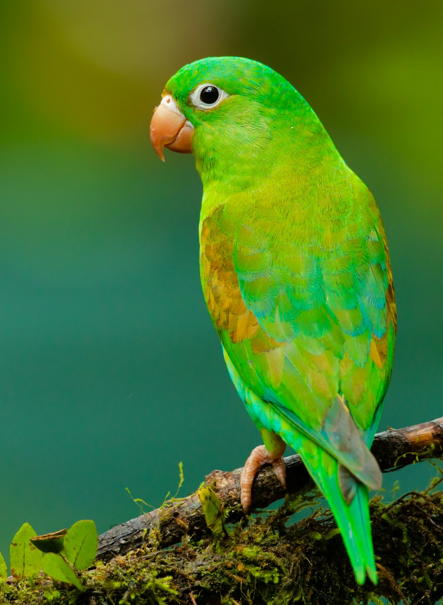

Papagaio
Os papagaios pertencem à ordem Psittaciformes. São conhecidos pela sua inteligência, capacidade de imitar sons humanos e plumagem vibrante. Muitas espécies vivem em florestas tropicais.
- Longevidade: algumas espécies ultrapassam os 60-80 anos
- Alimentação: frutos, sementes, nozes e vegetais
- Comportamento: sociais e muito comunicativos
- Ameaça: tráfico ilegal e destruição de habitat
Comparação rápida de aves
| Ave | Característica principal | Habitat típico |
|---|---|---|
| Papagaio | Imitação de sons e cores vivas | Florestas tropicais |
| Águia | Visão aguçada e voo planado | Montanhas e planícies |
| Pinguim | Nadador excelente, não voa | Regiões antárticas e subantárticas |
| Coruja | Caça noturna e rotação da cabeça | Florestas e campos |
Sabias que? Existem mais de 10 000 espécies de aves no mundo.
Em Portugal continental e ilhas existem cerca de 500 espécies registadas.